Vores steak menu er berømt for sin diversitet og tilbyder en lang række forskellige udskæringer og steaks fra mange dele af verden. Mens du nok kan kende forskel på tyksteg og rump, ved du måske ikke præcis, hvad der adskiller en australsk fra en amerikansk eller dansk steak – så vi er trådt til for at hjælpe. Her er din guide til at spise dig rundt i MASHs verden.
Her hos MASH har vi taget det bedste fra den amerikanske steak tradition, nemlig store steaks udskåret af det bedste kvæg i verden. Smag for eksempel et fantastisk mørt stykke Wagyu, saftigt kød fra kornfodret amerikansk kvæg, dry-aged kød her fra Danmark eller et delikat stykke Uruguay Hereford. Vi har tilsat et uforligneligt vinkort, spektakulære forretter, cocktails med sjæl og desserter, der får munden til at løbe i vand.
På MASH ved vi bedre end nogen, at en fuldendt madoplevelse ikke alene skabes af det, der serveres for dig. Derfor er vores service og stemningen hos os lige så vigtig som dit måltid.

Du vil opleve, at vi ikke går
på kompromis med råvarerne, smagen, rammerne, detaljerne eller vores service. Så tag plads i de karakteristiske røde sofaer og lad dig forkæle.
Wagyu er navnet for det japanske kvæg, hvorfra Kobe-kødet stammer. Men der er meget Wagyu-kød, der ikke er Kobe-kød. Kobe er nemlig navnet på en by i Japan, ligesom Champagne er en provins i Frankrig. Hvis kvæget ikke er født, opfostret og slagtet i denne del af Japan, er det ikke Kobe. Wagyu derimod, er blot en betegnelse der dækker over nogle typer af japansk kvæg.
Der er mange strenge regler for, hvornår kødet lever op til standarden for ægte Kobe-kød. Udover at være fra et bestemt sted, og af en bestemt race, skal kvæget også fodres med en særlig kost og ja, kvæget får ofte daglig massage og hører klassisk musik i staldene. Alt sammen for at sikre, at kødet bliver så mørt som muligt. (Den klassiske musik hjælper med at få kvæget til at slappe af).
Dét, der gør Kobe-kød til noget helt særligt, udover dets mytiske status, er fedtmarmoreringen i kødet. Alle de forskellige forholdsregler, der bliver fulgt i det traditionelle opdræt at kvæget, sikrer en unik fedtmarmorering i kødet. Denne marmorering af Kobe-kød vurderes ud fra en skala fra 1 til 12, hvor 12 er den helt fine marmorering - og dermed det dyreste, og bedste, Kobe-kød. Det er dog i høj grad genetikken, der bestemmer den særlige fedtmarmorering. Det kød, vi importerer direkte fra Japan, har samme grund-DNA som den oprindelige sorte kvæg race, hvorfra det første Kobe- kød stammer. Og det har selvfølgelig den højeste score i den japanske kvalitetstest af kødet!
Vores amerikanske steaks er nogen af vores mest populære, fordi kødet er saftigt, mørt og får en lækker, næsten karamelliseret ‘skorpe’ på ydersiden, når det tilberedes. Skorpen er faktisk resultatet af et højt sukkerindhold i kvægets blod, som stammer fra majs i deres diæt. Vores kød kommer fra Omaha i Nebraska (Nebraska er kendt for deres majsproduktion).
Nok den mest usædvanlige af vores steaks. Vores danske kød er dry-aged modnet i op til 90 dage i temperatur-kontrollerede modningsskabe, som du kan se, så snart du træder ind i vores restauranter. Faktisk er dry-age processen en forrådningsproces, men vi skærer selvfølgelig så meget af kødet (30%) af, at intet af din steaks har rørt ved bakterierne på ydersiden.
Det er en normal misforståelse, at modning = mørere kød, da det, der faktisk sker, er, at kødet mister en del af sin væske i processen. Det, der sker, er dog, at smagen forstærkes helt utroligt!
.. at som udgangspunkt at alt vores kød skal steges medium-rare, for at få den bedste tekstur, smag og aroma ud i kødet, samt at du som vores gæst får den bedste oplevelse af kødets kvalitet.
Vi bruger Black Angus køer, en af de mest populære steak-racer pga. dens marmorering, fra Uruguay. Kødet er i samme kvalitet som amerikansk, men det er ofte mere prisvenligt, da Uruguay ikke har samme steak-historie og er nyere i kødindustrien. Hvilken kun er endnu mere grund til at elske det, hvis du spørger os!
Japansk Kobe Wagyu behøver ikke den store introduktion, da det er kendt som “The Rolls Royce” af kød-verdenen. Kort fortalt er Kobe kendt for sin fantastiske marmorering, som skaber næsten utænkeligt blødt og mørt kød. Vores japanske Kobe er importeret særligt til MASH, og er selvfølgelig af den højeste kvalitet.
På MASH er vores kærlighed til kød udbredt. Men det danske kød har en særlig plads i vores hjerter på grund af dets særlige smag. I sin tid var en del af tanken bag vores koncept at få det danske kød helt frem på den gyldne plads, det fortjener.
Vores danske kød bliver udvalgt på slagteriet, som vurderer hvilke reb (sider), der er mest velegnede til at tørmodne. Tørmodning er en udbredt amerikansk tradition, vi har taget til os. Man ser på filettens mamorering, og når rebene har hængt et par uger, vurderes om marmoreringen i kødet er høj nok. Det danske kød hænger i minimum 60 dage og maksimum 90 dage.
Mange tror, at modningen gør kødet mere mørt, men det er faktisk ikke tilfældet. De første 25 døgn mørner kødet, hvorefter kødsmagen koncentreres, eftersom 10 procent af væden i kødet fordamper på 30 dage.
Tørmodningen er en del af grunden til, at vi anbefaler dig at vælge det danske kød grillet medium-rare - for at sikre, at dit kød ikke er tørt.
Det danske kød er mere intenst end det amerikanske – både i farve, smag og struktur. Når det er fuldmodnet, smager det nærmest som vildt, og man skal foretrække modnet kød for at foretrække det danske.
Mange branchefolk eller kulinarisk interesserede foretrækker det danske kød. Hvis du endnu ikke har prøvet det, vil vi foreslå, at vores steaks deles omkring bordet, så I kan opleve smagvariationerne mellem eksempelvis det danske og amerikanske kød.
Ved at tørre det danske kød i op til 90 dage koncentreres smagen og fedtmarmoreringen. Denne metode har vi udviklet i samarbejde med Danish Crown for at skabe den bedste smagsoplevelse for vores gæster.
Efterspørgslen på vores danske kød er steget i så høj grad, at vi nu har valgt at opkøbe marker, hvor vi kan opdrætte eget kvæg.
Lige siden vi i 2009 slog dørene op til vores første restaurant i Bredgade, har vi serveret kød i den absolutte verdensklasse. Fra dag ét var der kød fra USA og Dry Aged kød fra Danmark på menukortet, og senere er det suppleret med kød fra både Tyskland og Uruguay. Men selvom det udenlandske luksuskød er populært, så er der for Mikkel Glahn, partner i Copenhagen Concepts, som ejer MASH, ingen tvivl om, hvilken retning de seneste års lokale fødevaretendens peger i.
Vi har netop opkøbt land tæt på Skovriderkroen i Nordsjælland, hvor til vi har investeret i Wagyu-kalve, som skal blive til vores egne, helt lokale luksusbøffer. Ved at komme så tæt på produktionen, som det overhovedet er muligt for en restaurant, vil vi kunne producere kød af en hidtil uset kvalitet herhjemme, siger Mikkel Glahn.
Danske rødvinsdruer i foderet Udover saftige bøffer, er vores restauranter også kendt for at servere et godt glas rødvin til sit kød. Derfor vil vi også eksperimentere med at komme overskudsdruer fra dansk vinproduktion i køernes foder, ligesom man kender det fra kobe-kød, hvor kvæget spiser øl-mask.
I Frankrig har man tidligere eksperimenteret med at give druerester til dyr, for at kødet skal få et eminent samspil med vinen, og da vi faktisk har flere danske vinproducenter herhjemme, så vi det som en oplagt mulighed for vores køer
Så hvis du vil opleve det sagnomspundne kød her i Danmark, er det bare om at booke bord på den nærmeste MASH restaurant – eller tage en tur forbi vores restauranter i London eller Hamburg – tro os, Koben er værd at rejse for!